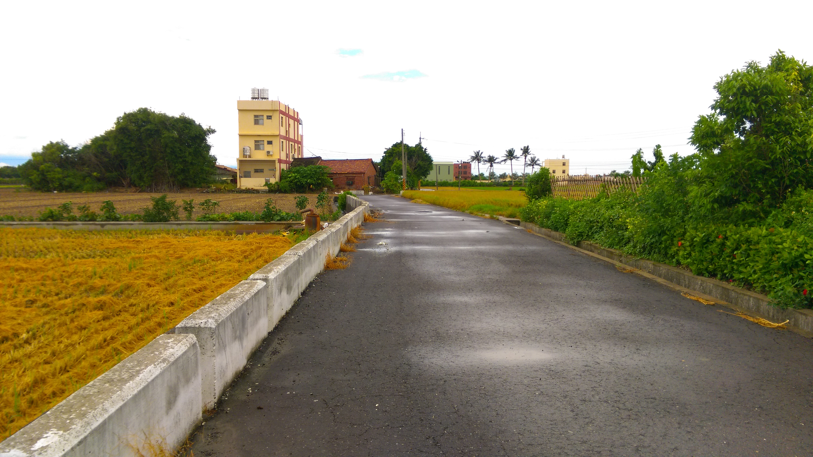

經過這次的水井申請作業，過去我一直認為現在台灣應該已經很少水井了，想說應該都是用水庫的自來水，沒想到台灣還有這麼多的用水是來自抽取地下水，而且有很多還是深水井，對地層下陷也會造成嚴重的影響。但水井的存在，有其環境背景；水井與當地產業活動已緊密結合，貿然封填，民眾將遭受重大衝擊，因此政府計畫擬先進行水井清查，並予以分類、分級；對地層下陷影響潛勢較輕微之灌溉水井，採減少誘因、增加阻力之方式，軟性地勸導民眾將水井封填。

水井的調查在今天走入尾聲，加上颱風的關係，今天來的人寥寥無幾，因此大部分的時間可以彈性利用，我在附近走走晃晃，看看平時很難有機會來到的農村景致。隨著都市發展越來越迅速，少子化、年輕人口外移，這些農田未來有一天可能會變成高樓大廈林立的都市叢林，想到未來可能看不到這些美好的景致，不禁覺得悲傷，都市發展固然重要，但如果這些風景都消失的話，對人類絕對是沒有益處的。
過去政府推行”客廳即工廠”的政策，也導致如今農田旁邊臨著許多工廠，不僅破壞了農村景觀，廢水、廢棄也汙染了水源與土地，連帶汙染了我們吃進肚子的農作物。但這些產業已根深蒂固的在這個地方了，要改變不是一天兩天就有辦法達成的，未來該如何解決是規劃者必須審慎思考的課題。